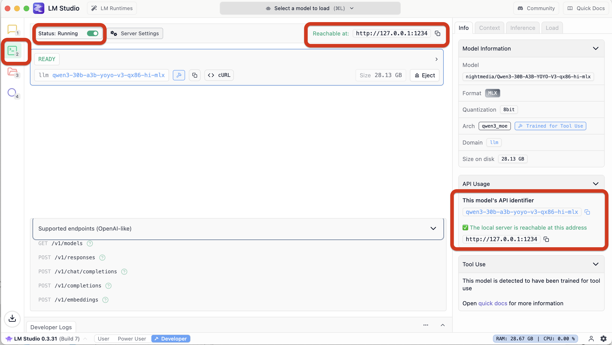
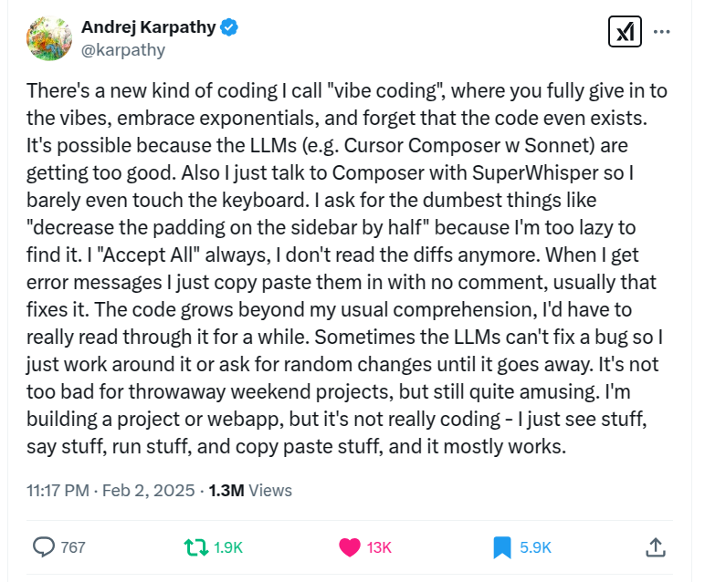

ML LLM Dev Links and Notes of resources of interest
Dev, LLM code writing, Agents - coding agents
It turned out coding agents are the 2nd big LLM killer-app. A wide application area with huge unserved demand. The moment people started mass copy-pasta code to-fro chat-gpt, was the moment we all realised: ah-haa! Why do people go through all the trouble, jump through hoops, inconveniences etc, to do that? Because they found it useful! I did it too, I too found it better than the alternatives: 1) coding for myself, solo, me-myself-and-I alone wiht my-code (now), and 2) pestering colleagues to read, them being grumpy the same way I'm grumpy when my attentiion is dragged from writing what interests me, into reading something else someone else wrote what interests them. Thrashing my context inthe process. :-)
The agents have been tremendous success and seen tremendous progress. I'm amazed. I got $250 free CC-web credits when subscribing to a new Anthropic $20/mo sub, and proceed to run Cluade Code - Web for 2 weeks now on-and-off. This was CC running on a virtual box somewhere in the cloud, and communicating via github push/pull and web gui. All the while running Curson for my day job - with the RL trained internal model that's both fast and good, it's a breeze to use. Then there are random CC session on demand in the terminal.
At the start of Oct-2025 codex became so good, that every time I have an idea, I just open a terminal in a directory, and run codex: I command the codex, codex commands the command line. 😆 For me AGI arrived with codex-5-high. I'm loving that socratic dialogue became the new programming. 🥰 In a dialogue between myself and codex, a set of actions emerges materialises somehow, and the job is done. 🤯 In this New-as-old world, we got Chat-as-programming, Dialogue-as-code, LLM-as-cpu, Context-as-ram. Once the QA session exhausts what was on my mind, I pause Ctrl-Z codex into background. On the next session, I continue summon codex back in the foreground with $ fg, and continue from where we stopped last time.
In VSCode I got Cline using OpenAI API on localhost:1234 served by LMStudio. Recently got plessantly surprised to find out both got streaming support for MiniMax-M2 xml based use of tools. Did not expect that! And before that got Claude Code in terminal to use local LLM served by LMStudio. Vai e local litellm proxy running in docker and translating between Antropic API CC wants, and the OpenAI API LMStudio provides.
Coding agents - local in terminal without sweat, opencode + MiniMax-M2.1 ftw (Jan-2026)
Current best local coder on my againig mbp (m2, 96gb ram) is OSS agent opencode with OSS weights MiniMax-M2.1 model. The model quants are by Unsloth unsloth/MiniMax-M2.1-GGUF served from HuggingFace a single 55GB MiniMax-M2.1-UD-TQ1_0.gguf. The agent, the model, the end point, the interleaved thinking and the tools use - it *just runs*! 🤯 Unbelieveable. I get 10-20 tok/s on average, the longer the context the closer to 10 tok/s. The config is simply:
$ cat ~/.config/opencode/opencode.json
{
"$schema": "https://opencode.ai/config.json",
"provider": {
"LMStudio": {
"npm": "@ai-sdk/openai-compatible",
"name": "LMStudio",
"options": {
"baseURL": "http://127.0.0.1:1234/v1"
},
"models": {
"limi-air": {
"name": "limi-air"
},
"tongyi-deepresearch-30b-3b": {
"name": "tongyi-deepresearch-30b-3b"
},
"minimax-m2.1": {
"name": "minimax-m2.1"
}
}
}
},
"model": "LMStudio/minimax-m2.1"
}
No special gymnastics or incantations needed - all runs out of the box. LMStudio provides the end point the agent talks to on http://127.0.0.1:1234. Looking at the chat traffic agent-LLM is fun. 😊
2026-01-04 14:47:18 [DEBUG]
Received request: POST to /v1/chat/completions with body {
"model": "minimax-m2.1",
"max_tokens": 32000,
"top_p": 0.95,
"messages": [
{
"role": "system",
"content": "You are opencode, an interactive CLI tool that hel... ... via the configuration files in the project root.\n"
},
{
"role": "user",
"content": "Explain the content of this directory"
}
],
"tools": [
...
Flash Attention is on, K- and V- caches types both use Q8_0 in the llama.cpp back-end.
Coding agents - local in terminal, factory.ai-s droid (Nov-2025)
Heh - turns out eavesdropping on @FactoryAI droid talk to @lmstudio is not only useful but tremendous fun! Who knew?? 😂 The model/agent interaction is oft - 'were you raised by wolves, you two, per chance??' 😄 Really? You thought '$ mkdir /Project' will work, that's the way to go? fr! ffs Seems droid does not realise it was started in the 'current project directory' to make things easier for it. Do people usually launch their agent on Mars, while wanting it to edit files on Earth??
All these xml-like conversations remind me - the language spoken (the protocol) needs to be human readable. And even better if reading well than poorly. Internet - in addition to being free - IETF very early on cottoned on the fact "no human readable -> no human will get interested -> no one to make it work -> stays cr*p and dies for lack of use". So one could follow SMTP, POP3 and be not only readable, but read oh-key at leasat in not excellent. Formalisation of these things into some xml monstrosity is good when teaching principles to students. It's bad if used in actual practice. Much better to in practice make use of every nook and cranny to your advantage, use any accidental twist and turn, to make things more efficient, easier etc. UTF-8 backward compatible variable length encoding comes to mind.
The setup is as straightforward as it gets. For Droid I used
$ cat ~/.factory/config.json
{
"custom_models": [
{
"model_display_name": "LMStudio/qwen3-30b-a3b-yoyo-v5",
"model": "qwen3-30b-a3b-yoyo-v5-qx86-hi-mlx",
"base_url": "http://localhost:1234/v1",
"api_key": "sk",
"provider": "generic-chat-completion-api",
"max_tokens": 262144
}
]
}
then once in $ droid, select with /model.
Once you confirm LM Studio is running and serving on port 1234, this should work!
So the model is https://huggingface.co/nightmedia/Qwen3-30B-A3B-YOYO-V5-qx86-hi-mlx, a quantisation of https://huggingface.co/YOYO-AI/Qwen3-30B-A3B-YOYO-V5, derived from joining of 3 Qwen3 models:
Model tree for YOYO-AI/Qwen3-30B-A3B-YOYO-V5: Qwen/Qwen3-30B-A3B-Instruct-2507 Qwen/Qwen3-30B-A3B-Thinking-2507 (a reasoning model) Qwen/Qwen3-Coder-30B-A3B-InstructModel Highlights: * merge method: yoyo_fusion * precision: dtype: bfloat16 * Context length: 262,144 & 1010000 Parameter Settings: Temperature=0.7, TopP=0.8, TopK=20, MinP=0.
Coding agents - fully local in VSCode Cline (Nov-2025)
LMStudio serving MiniMax-M2 that was shrunk so it fits in my mid-memory laptop. And LMStudio supports tools with thinking interleaved and streaming that MiniMax uses - no need to lobotomise the protocol. Then - Cline knows how to make use of that too! No litellm proxy needed. A model minimax-m2-thrift-i1/MiniMax-M2-THRIFT.i1-IQ2_XXS.gguf that fits my VRAM and nothig else is needed - perfect! Not very fast though, and uses all of my 25 Watts on my years old MBP M2. :-) Still - pretty good. All local VSCode - Cline - LMStudio - MiniMax-M2-THRIFT.
Coding agents - fully local in terminal, Claude Code via litellm proxy (Nov-2025)
Make Claude Code CLI use LMStudio served LocalLLM API to run LLM inference localhost. This worked for me on 8-Nov-2025. I followed Setting Up Claude Code Locally with a Powerful Open-Source Model: A Step-by-Step Guide for Mac with minor changes.
## Current working setup looks like this Model nightmedia/Qwen3-30B-A3B-YOYO-V3-qx86-hi-mlx from [nightmedia/Qwen3-30B-A3B-YOYO-V3-qx86-hi-mlx · Hugging Face](https://huggingface.co/nightmedia/Qwen3-30B-A3B-YOYO-V3-qx86-hi-mlx)1. In the ~/litellm directory create 4 these files
ljubomir@macbook2(:):~/litellm$ for a in claude.env config.yaml docker-compose.yaml .env; do echo ------- $a; cat $a; done
------ claude.env
export ANTHROPIC_AUTH_TOKEN="sk-1234" # Matches your LiteLLM key
export ANTHROPIC_BASE_URL="[http://localhost:4000](http://localhost:4000/)"
export ANTHROPIC_MODEL="openai/qwen3-30b-a3b-coderthinking-yoyo-linear"
export ANTHROPIC_SMALL_FAST_MODEL="openai/limi-air-qx83s-mlx"
export CLAUDE_CODE_DISABLE_NONESSENTIAL_TRAFFIC=1 # Optional: No telemetry
------ config.yaml
model_list:
- model_name: "anthropic/*" # Maps all Anthropic models to your local one
litellm_params:
model: "openai/qwen3-30b-a3b-coderthinking-yoyo-linear" # Custom name for your model
api_base: "http://host.docker.internal:1234/v1" # Points to LM Studio
api_key: "lm-studio" # Dummy key (not actually needed)
max_tokens: 65536
repetition_penalty: 1.1
temperature: 0.6
top_k: 100
top_p: 0.95
------- docker-compose.yaml
services:
litellm:
image: ghcr.io/berriai/litellm:main-stable
command: ["--config=/app/config.yaml"]
container_name: litellm
restart: unless-stopped
volumes:
- ./config.yaml:/app/config.yaml
ports:
- "4000:4000"
env_file:
- .env
depends_on:
- db
healthcheck:
test: ["CMD-SHELL", "wget --no-verbose --tries=1 http://localhost:4000/health/liveliness || exit 1"]
interval: 30s
timeout: 10s
retries: 3
start_period: 40s
db:
image: postgres:16
restart: always
container_name: litellm_db
environment:
POSTGRES_DB: litellm
POSTGRES_USER: llmproxy
POSTGRES_PASSWORD: dbpassword9090
ports:
- "5432:5432"
volumes:
- postgres_data:/var/lib/postgresql/data
healthcheck:
test: ["CMD-SHELL", "pg_isready -d litellm -U llmproxy"]
interval: 1s
timeout: 5s
retries: 10
volumes:
postgres_data:
name: litellm_postgres_data
------- .env
LITELLM_MASTER_KEY="sk-1234"
2. Ensure LMStudio is started, model loaded and running, and LMStudio is serving the default endpoint localhost:1234
3. Ensure the endpoint is reachable
ljubomir@macbook2(::main):~$ curl http://localhost:1234/v1/models
{
"data": [
{
"id": "qwen3-30b-a3b-yoyo-v3-qx86-hi-mlx",
"object": "model",
"owned_by": "organization_owner"
},
.......
…and the fake key is “working” ok
ljubomir@macbook2(::main):~$ curl -H "Authorization: Bearer sk-1234" http://localhost:4000/health
{"healthy_endpoints":[{"api_base":"http://host.docker.internal:1234/v1","use_in_pass_through":false,"use_litellm_proxy":false,"merge_reasoning_content_in_choices":false,"model":"openai/qwen3-30b-a3b-coderthinking-yoyo-linear","max_tokens":65536,"repetition_penalty":1.1,"temperature":0.6,"top_k":100,"top_p":0.95,"litellm_metadata":{"tags":["litellm-internal-health-check"],"user_api_key_hash":"litellm-internal-health-check","user_api_key_alias":"litellm-internal-health-check","user_api_key_spend":0.0,"user_api_key_max_budget":null,"user_api_key_team_id":"litellm-internal-health-check","user_api_key_user_id":null,"user_api_key_org_id":null,"user_api_key_team_alias":"litellm-internal-health-check","user_api_key_end_user_id":null,"user_api_key_user_email":null,"user_api_key_request_route":null,"user_api_key_budget_reset_at":null,"user_api_key_auth_metadata":null,"user_api_key":"litellm-internal-health-check","user_api_end_user_max_budget":null},"cache":{"no-cache":true}}],"unhealthy_endpoints":[],"healthy_count":1,"unhealthy_count":0}
4. Start docker while being in the right dir
ljubomir@macbook2(::):~/litellm$ docker compose up -d
and verify docker is running file - check some logs
ljubomir@macbook2(::):~/litellm$ docker compose logs -f litellm
5. Setup the right env vars for Claude code, and start Claude Code cli (CC-cli)
ljubomir@macbook2(::):~/litellm$ source claude.env ljubomir@macbook2(::):~/litellm$ claude ▐▛███▜▌ Claude Code v2.0.36 ▝▜█████▛▘ openai/qwen3-30b-a3b-coderthinking-yoyo-linear · API Usage Billing ▘▘ ▝▝ /Users/ljubomir/litellm > /model ───────────────────────────────────────────────────────────────────────────────────────────────────────────────────────────────────────────────────────────────────────────── Select model Switch between Claude models. Applies to this session and future Claude Code sessions. For other/previous model names, specify with --model. 1. Default (recommended) Use the default model (currently Sonnet 4.5) · $3/$15 per Mtok 2. Opus Legacy: Opus 4.1 for complex tasks · $15/$75 per Mtok 3. Haiku Haiku 4.5 for simple tasks · $1/$5 per Mtok ❯ 4. openai/qwen3-30b-a3b-coderthinking-yoyo-linear Custom model ✔ Enter to confirm · Esc to exit
6. That’s - it should just work
Coding agentss - in terminal
Current workflow is:
# An Architect model is asked to describe how to solve the coding problem. Thinking/reasoning models often work well in this role.
# An Editor model is given the Architect’s solution and asked to produce specific code editing instructions to apply those changes to existing source files.
# https://aider.chat/2025/01/24/r1-sonnet.html
aider-openrouter-best() {
local -; set -x; env AIDER_START="$(date)";
aider --architect --model openrouter/deepseek/deepseek-r1 --editor-model openrouter/anthropic/claude-3.5-sonnet;
}
Atm waiting on a glitch to resolve -
architect> litellm.APIError: APIError: OpenrouterException - Retrying in 0.2 seconds... litellm.APIError: APIError: OpenrouterException -
...and so I'm realising now I more often then not now I have it write code for me.
It's not even that much faster atm tbh! By the time I have thought through, explained in detail in INSTRUCTIONS.md — I could have read up the sources, the docs, and done it myself.
The only explanation I have to offer, that I only now—waiting on the OR api to come back—have, is: it's **much more fun**!! 😍
It's much more fun to have someone else write the code, and even if need be talk them into "no no—not that way, change this, change that", than to do everything myself solo and in silence!! 😆
Ok—this I did not expect. 😛 That the most entertaining—wins. 🙃
Is vibing the way code wring will scale x10, x100 next??
LLMs for coding - pre-history, chatgpt copy-pasta
1. Start with ChatGPT copy&pasta - works but limited & manual, little time saved. 2. Onto Cursor - nice but not much gained, not even wrong. 3. Over to aider cmd line - some result there, even if cr*p result... but looks like it could be improved? 4. Current VSCode gui + Cline addon + OpenRouter payg credits + Claude model. Well hello!! Finally produced something not obviously wrong.
Until today the best I got was: in ChatGPT-o4/o1- etc, copy & paste code snippet(s), ask a Question, then incorporate the Answer in the soluton. So this was a replacement for 1) googling and reading web pages 2) search through Stackoverflow Q&A.
This is the 1st time I got code inserted in 3 files. That required AI to 1) read through 5-6 files 2) compare and contrast, reason by analogy 3) take my requirement Q in considerion 4) edit 3 files, delete some code, insert some other code.
I have my main codebase, about 200K LoC in an array/matrix language mostly, with some C/C++/bash/awk/sql too.
I'm agnostic Re: tools. Fallback always available is bash/vim/Makefile/gcc/g++/gdb/ddd/shell/... tools. But if IDE like VSCode/Spyder/CLion/Matlab/DBeaver is available - I'm happy to use. As long as it's not exlcusive, and one can edit/setup outside the IDE too. And esp important version contol - git now, prev hg, cvs, Teams. If that works - then all is good.
I tried Cursor. That looked hopeful, but did not get me results. I didn't like not being able to use existing API subscriptions in it. Also them using some kind of LLM in-house undocumented bodge. (I maybe wrong/maybe possible - didn't try too hard)
I then tried aider, a command line tool. That managed mutiple edits, but to not too good results. Waste of time wrt results, but: it was a good learning curve for me. I PAYG subscribed OpenAI -> DeepSeek -> OpenRouter.
OpenRouter leader board led me to Cline VSCode addon. Latest-greatest setup atm 1) VSCode 2) with Cline Addon 3) OpenRouter API key (payg credits) 4) select Claude 3.5 via openrouter/anthropic/claude-3.5-sonnet.
The dev task was as follows. Functionality A/B/C needs implementong. Look at existing wrapper X implementing A/B/C, while using Y external library for A/B. Create new wrapper U, to use external library W, in the same way X is using Y, to do the similar A/B. (C is done in X and U respectivelly) E.g. - see how the data is passed X-to-Y, then do it the same way U-to-W. Look at examples code in the W library, figure how to do A/B.
This to avoid doing the reading abt W and figuring A/B myself. I can do it myself, have done it half a dozen times already, for U/W equivalents, but: bit boring, and wanted to find out if I can make AI do it for me.
Have yet to finish the full loop, the code does not run yet. But - before it was laughably obviously bad and wrong. Now - the 1st time where the code looks plausable. Need to do a harness to test finally. To be continued.
Models - open source, open weights, open thoughts, code, documentation
llama.cpp
Inference of Meta's LLaMA model (and others) in pure C/C++
https://github.com/ggerganov/llama.cpp
DeepSeek R1
Unsloth dynamic
HuggingFace quants, incl distillations
Meta Llama models https://www.llama.com/
Meta Llama-3.3-70B-Instruct Hugging Face https://huggingface.co/meta-llama/Llama-3.3-70B-Instruct
Ollama
Get up and running with large language models.
https://ollama.com/
llm.c
LLMs in simple, pure C/CUDA with no need for 245MB of PyTorch or 107MB of cPython. Current focus is on pretraining, in particular reproducing the GPT-2 and GPT-3 miniseries, along with a parallel PyTorch reference implementation in train_gpt2.py.
https://github.com/karpathy/llm.c
LLM
A CLI utility and Python library for interacting with Large Language Models, both via remote APIs and models that can be installed and run on your own machine.
https://llm.datasette.io/en/stable/
Hugging Face Models
https://huggingface.co/models
Mistral AI https://mistral.ai/, Hugging Face https://huggingface.co/mistralai
QwQ-32B-Preview blog https://qwenlm.github.io/blog/qwq-32b-preview/, Hugging Face https://huggingface.co/Qwen/QwQ-32B-Preview, github Qwen2.5 https://github.com/QwenLM/Qwen2.5
QVQ-72B-Preview Hugging Face https://huggingface.co/Qwen/QVQ-72B-Preview
DeepSeek-V3 github https://github.com/deepseek-ai/DeepSeek-V3, Hugging Face https://huggingface.co/deepseek-ai/DeepSeek-V3
Reddit LocalLLaMA
https://www.reddit.com/r/LocalLLaMA/
llama.cpp guide - Running LLMs locally, on any hardware, from scratch https://blog.steelph0enix.dev/posts/llama-cpp-guide/
ModernBERT
This is the repository where you can find ModernBERT, our experiments to bring BERT into modernity via both architecture changes and scaling.
https://github.com/AnswerDotAI/ModernBERT
WordLlama https://github.com/dleemiller/WordLlama
Microsoft AI - AI Platform Bloghttps://techcommunity.microsoft.com/category/ai/blog/aiplatformblog, Introducing Phi-4
Chatbot Arena (formerly LMSYS): Free AI Chat to Compare & Test Best AI Chatbots https://lmarena.ai/
Scaling Test Time Compute with Open Models https://huggingface.co/spaces/HuggingFaceH4/blogpost-scaling-test-time-compute
The Complexity Dynamics of Grokking https://brantondemoss.com/research/grokking/
--
LJ HPD Sun 22 Dec 22:24:19 GMT 2024